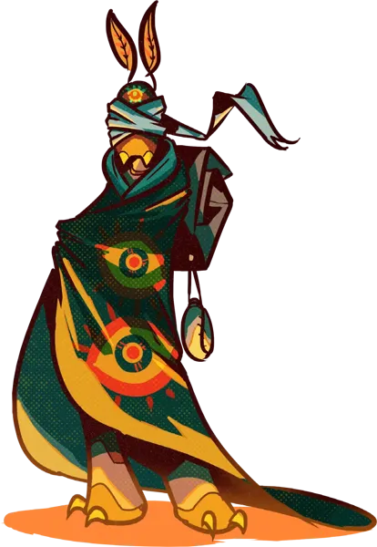

Die Unerschrockenen The Indomitables · S. 290
GrundstimmungMutig und ängstlich zu gleichen Teilen
RevierDie Hundert Kammern
Kaum jemand sieht wirklich Geister durch die Hundert Kammern ziehen, aber wenn man den Legenden glaubt, ist die Chance immer da. Die Unerschrockenen (ja, sie haben sich selbst so genannt, und ja, sie meinten es sehr ernst) sind eine Gruppe schatzsuchender Käfer, die die Räume des Shadow House nach geheimnisvollen Schätzen durchsuchen. Das ist schwieriger als gedacht, denn jede von ihnen trägt jederzeit etwas vor den Augen – von der Augenbinde bis zur Tüte über dem Kopf. Denn: Wenn du keinen Geist siehst, sieht er dich auch nicht. Das ist Wissenschaft, das.

Ein Haus im Haus (Wahrzeichen)
Ein Puppenhaus auf einem Tisch in den Hundert Kammern, fast perfekt in Käfergröße. Vielleicht …
- Die bekannten Geister des großen Hauses stehen hier als Kerzenwachs-Miniaturen. Sie bewegen sich auch von selbst …
- Angeblich ändert sich der Grundriss des Shadow House mit der Zeit. Würden sie es überhaupt merken?
Sicht jenseits der Sicht (NSC)
Die Neuesten bleiben nah am Puppenhaus und markieren ihre Wege mit Faden. Die Erfahrensten sind anders.
OOlgenfrold, ein Skorpion mit dem Stachel stets vor den Augen. Kein Orientierungstalent, aber erstaunlich weise in vor-mysteriokalyptischer Geschichte.
PPease Pottage, weise Schnecken-Anführerin, seit über tausend Jahren nicht aus ihrem Haus gekommen. Fast sicher nicht wahr.
LLi Cheng, Geister-Experte Nr. 1 – hat selbst nie einen gesehen.
Schatzsuche (Merkmal)
Wer lange genug herumtappt, findet bestimmt etwas Interessantes! Vielleicht …
- Im Puppenhaus gibt es ein kleines Museum. Die Hälfte der Vitrinen ist leer – hätten sie keine Augenbinden, wäre es ihnen aufgefallen.
- In einer kaputten Schublade nahe der alten Haustür liegt eine ganze Stadt der Unerschrockenen.